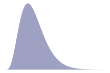
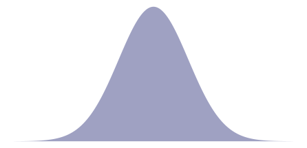

Write APA Style Documents Using Quarto
Ana Fulano1, Blanca Zutano1, Carina Mengano2,3, and Dolorita C. Perengano4
1Clinical Psychology Program, Department of Psychology, Ana and Blanca’s University
2Carina’s Primary Affiliation
3Carina’s Secondary Affiliation
4Buffalo, NY
Author Note
Ana Fulano  https://orcid.org/0000-0000-0000-0001
https://orcid.org/0000-0000-0000-0001
Blanca Zutano  https://orcid.org/0000-0000-0000-0002
https://orcid.org/0000-0000-0000-0002
Carina Mengano  https://orcid.org/0000-0000-0000-0003
https://orcid.org/0000-0000-0000-0003
Dolorita C. Perengano  https://orcid.org/0000-0000-0000-0004
https://orcid.org/0000-0000-0000-0004
Carina Mengano is now at Generic University.
The authors have no conflicts of interest to disclose.
Author roles were classified using the Contributor Role Taxonomy (CRediT; credit.niso.org) as follows: Ana Fulano: conceptualization and writing – original draft. Blanca Zutano: project administration and formal analysis. Carina Mengano: formal analysis and writing – original draft. Dolorita C. Perengano: writing – original draft, methodology, and formal analysis
Correspondence concerning this article should be addressed to Ana Fulano, Clinical Psychology Program, Department of Psychology, Ana and Blanca’s University, 1234 Capital St., Albany, NY 12084-1234, USA, Email: sm@example.org
Abstract
This document is a template demonstrating the apaquarto format. The template demonstrates the use of in-text citations, possessive citations, masked citations, meta-analytpic citations, block quotes, equations, figures, and tables. Creating appendices is demonstrated.
Impact Statement
The apaquarto template allow writers to apply APA style consistently with minimal fuss and bother.
Keywords: APA Style, Quarto, Markdown, apaquarto
Write APA Style Documents Using Quarto
This is my introductory paragraph. The title will be placed above it automatically. Do not start with an introductory heading (e.g., “Introduction”). The title acts as your Level 1 heading for the introduction.
Details about writing headings with markdown in APA style are here. In general, level 1 headings should be reserved for the Method, Results, Discussion, References, and Appendices sections.
YAML metadata
At the top of the apaquarto document, there is a lot of metadata (e.g., title, authors, affiliations, abstract, and so forth) written in YAML. Although the various options apaquarto are all documented, keeping track of them all can be difficult. Generating the initial YAML metadata can be easier if one begins with the the apa7maker web app.
Citations
See here for instructions on setting up citations and references. A parenthetical citation requires square brackets (Cameron & Trivedi, 2013). This reference was in my bibliography file. An in-text citation is done like so:
Cameron and Trivedi (2013) make some important points.
See here for explanations, examples, and citation features exclusive to apaquarto. For example, apaquarto can automatically handle possessive citations:
Cameron and Trivedi’s (2013) position differed from Brown’s (2012, pp. 1–2) take on the matter.
Meta-analytic citations
By default, any references in the nocite field in your YAML heading will be assumed to be meta-analytic references that will appear in the reference section with an asterisk. If you want to use nocite but do not want references prefixed with asterisks, then set the meta-analysis field to false.
It is possible to cite meta-analytic references in text. For example, Cohen et al. (2003) is listed in the nocite field.
Block Quotes
Sometimes you want to give a longer quote that needs to go in its own paragraph. Block quotes are on their own line starting with the > character. For example, Austen’s (1814/1990) Mansfield Park has some memorable insights about the mind:
If any one faculty of our nature may be called more wonderful than the rest, I do think it is memory. There seems something more speakingly incomprehensible in the powers, the failures, the inequalities of memory, than in any other of our intelligences. The memory is sometimes so retentive, so serviceable, so obedient; at others, so bewildered and so weak; and at others again, so tyrannic, so beyond control! We are, to be sure, a miracle every way; but our powers of recollecting and of forgetting do seem peculiarly past finding out. (p. 163)
Math and Equations
Inline math uses \LaTeX syntax with single dollar signs. For example, the reliability coefficient of my measure is r_{XX}=.95.
If you want to display and refer to a specific formula, enclose the formula in two dollar signs. After the second pair of dollar signs, place the label in curly braces. The label should have an #eq- prefix. To refer to the formula, use the same label but with the @ symbol. For example, Equation 1 is Euler’s Identity, which is much admired for its elegance.
e^{i\pi}+1=0 \tag{1}
A more practical example is the z-score equation seen in Equation 2.
z=\frac{X-\mu}{\sigma} \tag{2}
If no identifier label is given, a centered equation in display mode will have no identifying number:
\sigma_e=\sigma_y\sqrt{1-r_{xy}^2}
Displaying Figures
Do you want the tables and figures to be at the end of the document? You can set the floatsintext option to false. The reference labels will work no matter where they are in the text.
A reference label for a figure must have the prefix fig-, and in a code chunk, the caption must be set with fig-cap. Captions are in title case.
Figure 1
The Figure Caption

To refer to any figure or table, use the @ symbol followed by the reference label (e.g., Figure 1).
Displaying Tables
We can make a table the same way as a figure. Generating a table that conforms to APA format in all document formats can be tricky. When the table is simple, the kable function from knitr works well. Feel free to experiment with different methods, but my apa7 package adapts David Gohel’s flextable package to make a wide variety of APA-styled tables. In this blog series, I used apa7 to recreate the 24 example tables from chapter 7 of the APA Publication Manual.
Table 1
The Table Caption.
Variable | B | SE | β | t(53,936) | p |
|---|---|---|---|---|---|
Constant | 13,003.44 | 390.92 | .00 | 33.26 | <.001 |
Carat | 7,858.77 | 14.15 | .93 | 555.36 | <.001 |
Depth | −151.24 | 4.82 | −.05 | −31.38 | <.001 |
Table | −104.47 | 3.14 | −.06 | −33.26 | <.001 |
To refer to this table in text, use the @ symbol followed by the reference label like so: As seen in Table 1, the price of a diamond is related to several features of the diamond.
Tables and Figures Spanning Two Columns in Journal Mode
When creating tables and figures in journal mode, care must be taken not to make figures and tables wider than the columns, otherwise \LaTeX sometimes makes them disappear.
As demonstrated in Figure 2, you can make figures tables span the two columns by setting the apa-twocolumn chunk option to true.
Figure 2
A Figure Spanning Two Columns When in Journal Mode

Using Footnotes
A footnote is usually displayed at the bottom of the page on which the footnote occurs. A short note can be specified with the ^[My note here] syntax.1 A longer note can be specified with the [^id] syntax with the text specified on a separate line like so [^id]: Text here.2
A regular paragraph without any indentation is not part of the footnote and will be part of the main body of the document.
Hypotheses, Aims, and Objectives
The last paragraph of the introduction usually states the specific hypotheses of the study, often in a way that links them to the research design.
Method
General remarks on method. This paragraph is optional. Not all papers require each of these sections. Edit them as needed. Consult the Journal Article Reporting Standards for what is needed for your type of article.
Participants
Who are they? How were they recruited? Report criteria for participant inclusion and exclusion. Perhaps some basic demographic stats are in order. A table is a great way to avoid repetition in statistical reporting.
Measures
This section can also be titled Materials or Apparatus. Whatever tools, equipment, or measurement devices used in the study should be described.
Measure A
Describe Measure A.
Measure B
Describe Measure B.
Subscale B1.
A paragraph after a 4th-level header will appear on the same line as the header.
Subscale B2.
A paragraph after a 4th-level header will appear on the same line as the header.
Subscale B2a.
A paragraph after a 5th-level header will appear on the same line as the header.
Subscale B2b.
A paragraph after a 5th-level header will appear on the same line as the header.
Procedure
What did participants do? How are the data going to be analyzed?
Results
Descriptive Statistics
Describe the basic characteristics of the primary variables. My ideal is to describe the variables well enough that someone conducting a meta-analysis can include the study without needing to ask for additional information.
Table 2 is an example of a plain markdown table. Note the that the caption begins with a colon.
Table 2
My Caption.
| Letters | Numbers |
|---|---|
| A | 1 |
| B | 2 |
| C | 3 |
Discussion
Describe results in non-statistical terms.
Limitations and Future Directions
Every study has limitations. Based on this study, some additional steps might include…
Conclusion
Describe the main point of the paper.
References
References marked with an asterisk indicate studies included in the meta-analysis.
Appendix A
My Appendix
Any level 1 heading after the reference section (if it exists) is an appendix. If you do not specify a reference section, you will need to give the level-1 heading an identifier with an #apx- prefix. For example,
# My Appendix {#apx-a}
Appendices are created as level 1 headings with an #apx- prefix in the identifier. Appendix titles should be in title case and should describe the content of the appendix.
If there is only one appendix, the label inserted above the the appendix title will be Appendix. If there are multiple appendices, the labels Appendix A, Appendix B, Appendix C and so forth will be inserted above the titles.
To cite an appendix as a whole, reference it with the @apx- prefix. For example, see Appendix A and Appendix B.
Appendix A is an appendix with a contingency table (see Table A1).
Table A1
Contingency table
Gears | Automatic | Manual | ||
|---|---|---|---|---|
n | % | n | % | |
3 | 15 | 78.9% | 0 | 0.0% |
4 | 4 | 21.1% | 8 | 61.5% |
5 | 0 | 0.0% | 5 | 38.5% |
Note. χ2 (2) = 20.94, p < .001, Adj. Cramer’s V = .78 | ||||
Appendix B
Another Appendix
Figure B1
Appendix Figure

See Figure B1, an example of an imported graphic using markdown syntax.